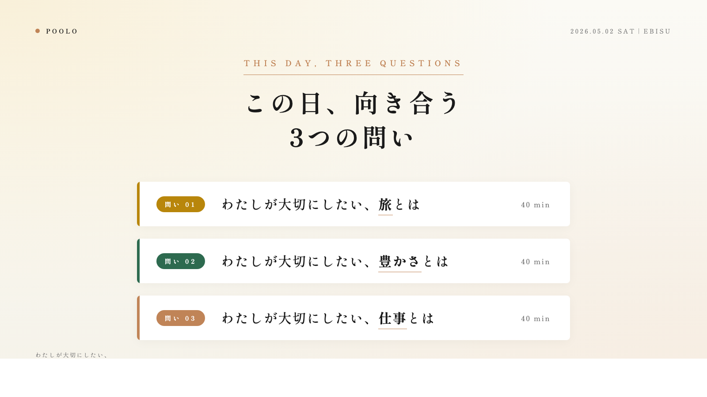

【5/2＠恵比寿】わたしが大切にしたい、旅とは、豊かさとは、仕事とは
想像もしなかった世界と自分と、出会いに。
5月2日、土曜日の午後。「3つの問い」をじっくり考え、言葉にし、対話をするイベントを開催します。
「わたしが大切にしたい、旅とは、豊かさとは、仕事とは」
- 最近、仕事がこなす作業になっていて、新しい刺激がほしくなっているあなたに。
- キャリアを積み上げてきたけれど、なんだか満ちていないあなたに。
- 自分を、まだ出しきれていないと感じているあなたに。
場所は恵比寿。3時間、じっくりと向き合うイベントです。
POOLO LIFE公式サイト／12期募集中この日、向き合う3つの問い

すべての問いに共通するのは、わたしが大切にしたい◯◯ということ。言葉そのものの定義を考えるのではなく、自分にとって大切なことを言葉にする時間です。
今までどんな旅に心が動いてきたのか？ 自分はなぜ旅をするのか？ これから、どんな旅をしたいのか？
かなり抽象的なお題の、豊かさ。自分にとって心地良い時間とは？ いい感じの状態とは？ ウェルビーイングって？
生きる上で、仕事はどんな存在？ なぜ、なんのために仕事をしているの？ 今の仕事のやりがいって？
こんな問いについて、3人組で言葉にしていきます。
このイベントならではの、5つの「対話のお作法」
このイベントの対話には、5つのルールを用意しました。
- アドバイスしない
- 要約しない、まとめない
- 質問だけを返す
- 沈黙を埋めない
- メモを取らない
話す人が、自分の言葉をゆっくり探せるように。ルールはその一点のためにあります。守ると、なぜか深い話になる不思議なやつです。
開催概要

日時: 2026年5月2日（土）15:00〜18:00（受付14:45〜）
会場: co-ba恵比寿
定員: 15〜20名程度
参加費: 3,500円（税込・ワーク用紙・お茶菓子代込み）
持ち物: 筆記用具のみ
主催: POOLO（株式会社TABIPPO）
こんな方におすすめ
- 毎日はちゃんと回っているのに、手応えが薄い気がしている
- 「自分がいちばん大切にしたいもの」を、最後にいつ言葉にしたか思い出せない
- 仕事・旅・暮らし、そのどれかを更新したい予感がある
- 知らない誰かと、深い話を2〜3時間してみたい
このイベントを企画した理由と主催説明

POOLOは、旅を入り口に自分の生き方・働き方を問い直す大人の学び場として、10年以上続いてきました。運営しているのは、旅に関する事業を広く手がけてきた株式会社TABIPPO。これまでに旅好きの方、自分の次の一歩を探している方、数多くの方と一緒に時間を過ごしてきました。
近年、POOLOで出会う方々にひとつの共通項を感じるようになりました。
仕事は回せている。人間関係もそつなくこなせている。キャリアも、それなりに積み上がっている。
それでも、どこかで「これで合っているんだっけ」という小さな声が鳴っている。
周囲から問い返されない時間が続くと、自分の輪郭はゆっくり溶けていきます。そして、溶けていることにも気づきにくくなる。
そんな方々に必要なのは、きっと新しい情報やフレームワークではなく、自分の中にすでにある素材を、他者の問いでもう一度掘り直す時間ではないか。そう考えて、このイベントを企画しました。
対話の5つのルールは、「話す人が自分の言葉をゆっくり探せるように」という一点のためだけに置いています。助言もなく、要約もされない3時間。だから、普段の会話では出てこなかった言葉が、自分の口からこぼれ出してきます。
このオフラインイベントは、POOLOが運営する8ヶ月のオンラインプログラム「POOLO LIFE」の核になっている思想を、3時間に凝縮したものでもあります。いきなり8ヶ月は少しハードルが高いという方も、まずは1日、問いと対話の場を味わいに来てもらえたらと思います。
最後に
イベント自体は18時で終わります。その後、ご飯に行ける人はいきましょう！
POOLO LIFE公式サイト／12期募集中